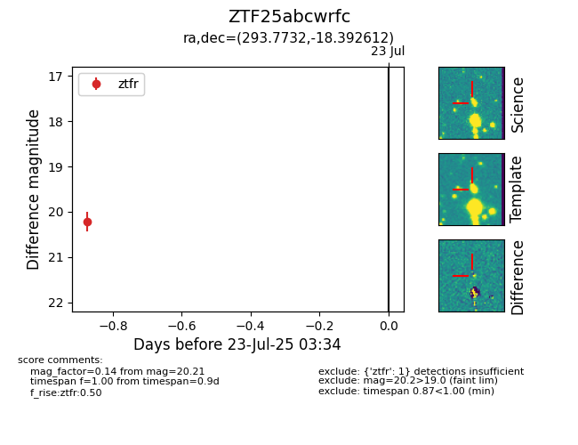

Target ZTF25abcwrfc at 2025-07-23 12:37, see:
FINK: fink-portal.org/ZTF25abcwrfc
Lasair: lasair-ztf.lsst.ac.uk/objects/ZTF25abcwrfc
ALeRCE: alerce.online/object/ZTF25abcwrfc
alt names
ZTF25abcwrfc (ztf,fink)
coordinates:
equatorial (ra, dec) = (293.7732,-18.39261)
galactic (l, b) = (20.8823,-17.68411)
photometry
last ztfr=20.21
1 ztfr detections
